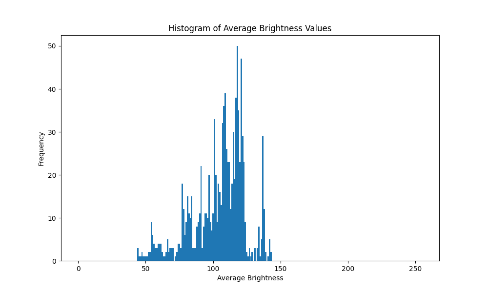

Video Processing Pipeline
One‑liner: Automated video post‑production tool that composites talking‑head overlays, detects/blurs passerby faces, and adds dynamic watermarks with intelligent brightness adjustment.
Problem → Outcome: Raw street footage needs extensive manual editing: face privacy compliance, branding overlays, presenter integration, and lighting consistency. I built an automated pipeline that processes multi‑source videos with Haar Cascade face detection, adaptive night‑mode brightening, and timed watermark rotation—transforming hours of editing into a single script execution.
Three Proof Points
- Haar Cascade face detection with automatic averaging blur applied to all detected face regions
- Adaptive brightness analysis with histogram‑based day/night classification and +20 additive correction for low‑light scenes
- Multi‑layer compositing: talking‑head overlay with green‑channel keying, dual rotating watermarks (5s intervals), static logo, 2‑second fade transitions
Results
- Processes 1280×720 video at 30fps with 5 simultaneous operations per frame
- Privacy‑compliant face blurring with bounding box visualization for all detected passersby
- Seamless multi‑video merge: main footage → end screen with synchronized fade‑in/fade‑out effects
Skills: Computer Vision • Video Processing • Real‑time Detection • Frame Manipulation • NumPy Optimization • Data Visualization • Python Automation
Approach
Read details ▼Chose OpenCV for robust cross‑platform video I/O and Haar Cascades for lightweight face detection; implemented green‑channel keying for talking‑head transparency; separated concerns into modular functions (detection, compositing, effects) for maintainability; used histogram analysis to calculate overall video brightness for intelligent day/night classification rather than per‑frame thresholds.
Architecture / Data Flow
Read details ▼- Input sources: Main video (office.mp4), talking‑head overlay (talking.mp4), end screen (endscreen.mp4)
- Processing pipeline: Resize → brightness calculation → face detection/blur → overlay composite → watermark rotation → logo merge → fade effects
- Face detection: CascadeClassifier (scaleFactor=1.3, minNeighbors=5) with 99×99 averaging blur applied to detected ROIs
- Brightness system: Per‑frame grayscale mean calculation → histogram aggregation → overall average threshold (100) → +20 additive correction for night scenes
- Watermark rotation: Frame‑count modulo logic (5‑second intervals × 30fps = 150 frames/segment) cycling between two branded overlays via mask compositing
- Output: MJPG‑encoded AVI at 1280×720@30fps with real‑time progress percentage tracking
Key Functions
Read details ▼blurface()— Haar Cascade detection → 99×99 averaging blur on face ROIs with blue rectangle visualizationoverlay_talking()— Green‑channel keying (G≤240 mask) for half‑size corner composite at bottom‑leftswitch_wm_sec()— Modular watermark alternation using segment indexing based on elapsed framesfadeIn_fadeOut()— Alpha blending for 2‑second fade at video head/tail boundaries (first/last 60 frames)isDayOrNight()— Statistical brightness classifier using mean of all frame brightness values with Matplotlib histogram
What I Learned & Next Steps
Read details ▼- MJPG codec has compatibility issues on macOS—MP4/H.264 export would improve cross‑platform playback
- Face detection accuracy drops in low‑light conditions; integrating DNN‑based models (dlib/MTCNN) would boost recall
- Current temporal smoothing implementation has scope issues; refactoring to maintain frame history across calls would reduce detection jitter
- Next: Add multi‑threading for faster encoding, implement audio passthrough, support batch video processing
Screenshots / Video Output
View media ▼Histogram of brightness & Video Output with blurred faces

Credits
Read details ▼Haar Cascade XML from OpenCV pre‑trained models